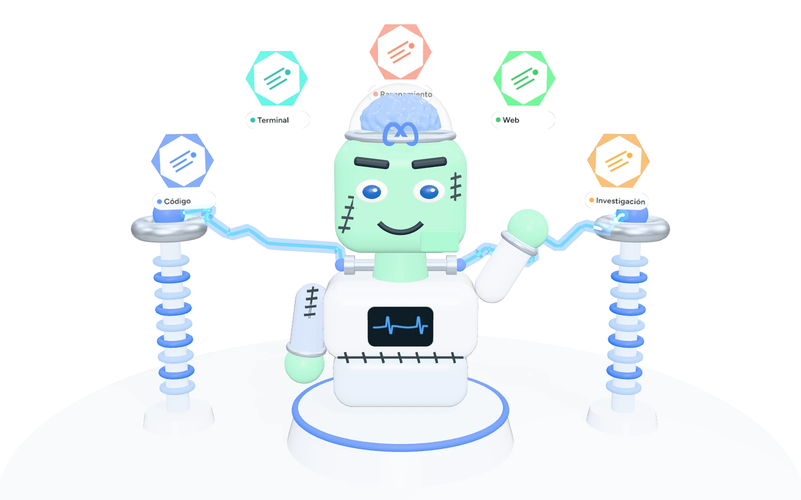
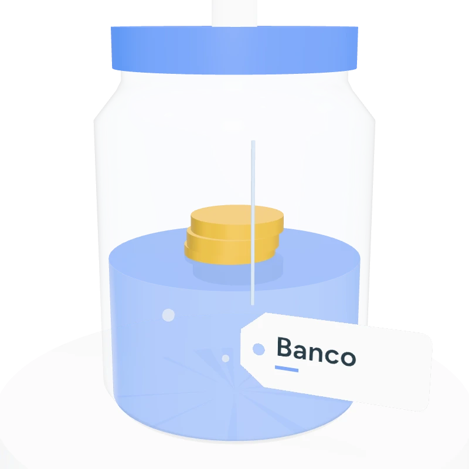
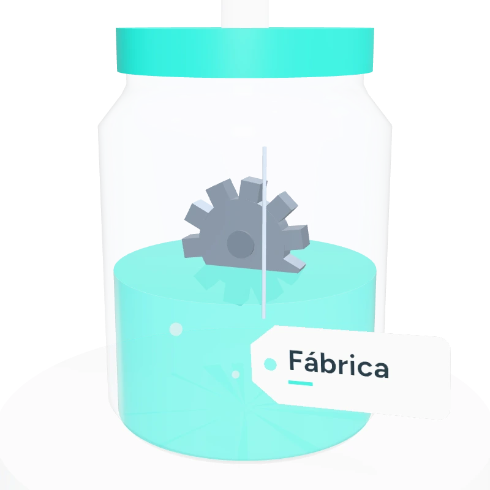
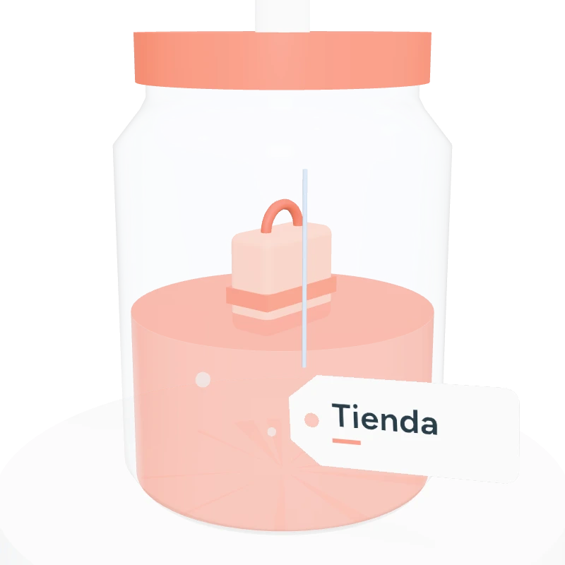
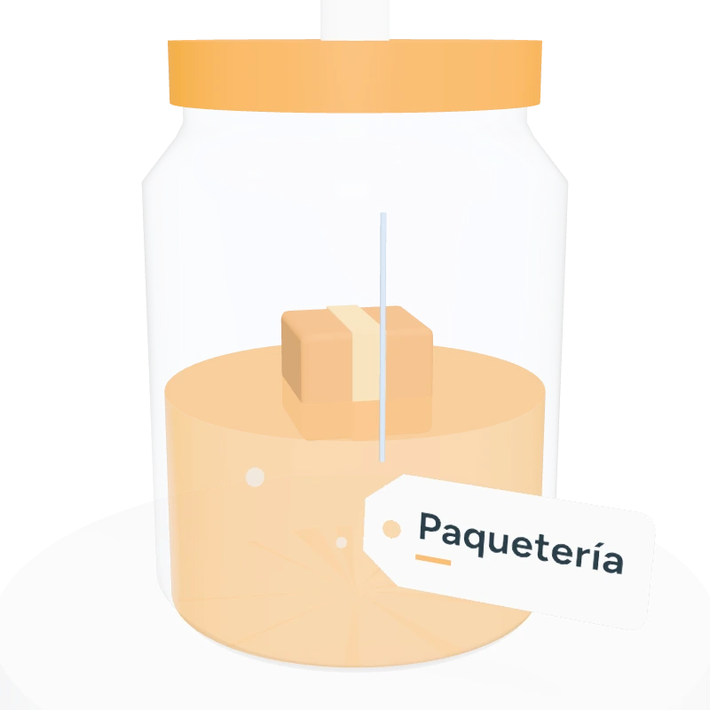

Banco A
Cada compra trae su número de folio.
- Supermercado5 oct · folio 3837$1,363.50
- Farmacia5 oct · folio 4866$571.00
- Farmacia5 oct · folio 4866$571.00Bien borrado: llegó dos veces por error.
Aquí el truco funciona
Agentztein aprende de sus errores y crea sus propias mejoras. Cada una se prueba antes de usarse y se guarda en su frasco, con una etiqueta que dice dónde sirve.

Arrastra para girar · toca un frascoEl cerebro: Muse Spark de Meta
Frascos de ejemplo: así se verá lo que Agentztein aprenda en cada negocio.
La IA aprendió: si ves dos cobros iguales, borra uno, es un error
. ¿Dónde lo usamos?
Cada compra trae su número de folio.
Aquí el truco funciona
No hay folio. Solo la hora distingue una compra de otra.
Se comió un café que sí compraste
Por eso cada truco va en su frasco, con la etiqueta de dónde sí sirve. Ejemplo sencillo; los casos de práctica del proyecto funcionan igual y son ficticios.
Nadie le escribe sus mejoras: las propone ella misma al revisar sus errores. Pero nada se usa sin probarse, y si el negocio cambia sus reglas, solo se revisa ese frasco.

Etiqueta: una ideaProblemas de todos los días, recreados con datos de práctica. En cada uno hay una trampa: lo que funciona en un caso falla en otro.
No borrar dos cafés que sí se compraron el mismo día.
1,199 casos de práctica
Aceptar cada pieza con la medida que pide su cliente. Los aviones exigen más que los autos.
1,091 casos de práctica
Saber si un cliente todavía puede devolver su compra, contando desde el día correcto.
887 casos de prácticaMandar a cada distribuidor con su vendedor, no al catálogo para el público.
893 casos de práctica
Cobrar la caja grande y ligera por lo que ocupa, no solo por lo que pesa.
886 casos de prácticaAgentztein usa Muse Spark, el modelo de inteligencia artificial de Meta, para pensar y decidir.
No lo modificamos ni lo reentrenamos. Lo que crece son los frascos que Agentztein va llenando sola, y cualquiera puede abrirlos para ver qué aprendió y por qué.

El laboratorio ya está armado. Ahora toca conectar el cerebro y empezar a llenar los frascos.
Los cinco negocios y sus casos de práctica, con las respuestas correctas.
Que Muse Spark resuelva sus primeros casos y deje registro de todo.
Que proponga sus propios trucos y los pruebe antes de usarlos.
Lo comparamos con otras tres formas de aprender. Si no gana, lo diremos.